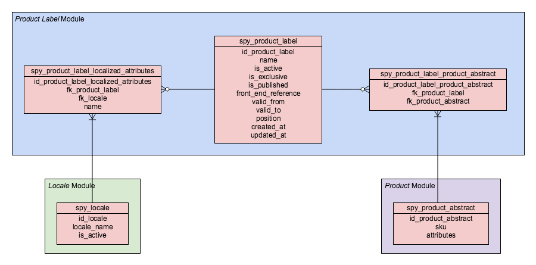

Product Label
Overview
Product labels are used to show additional information for abstract products in shop front-ends. They can be managed through a dedicated Zed user interface and rendered in various ways in project implementations.
Feature Integration
Prerequisites
To prepare your project for using Product Labels:
- Require the Product Label module in your composer.json by running composer require spryker/product-label spryker/product-label-collector spryker/product-label-gui
- Install the required changes to the data structure by running console propel:diff && console propel:migrate && console propel:model:build. This will generate a migration file, run the migration against your database, and build all new Propel models.
- Generate the new transfer objects by running console transfer:generate
- Make sure the new Zed user interface assets are built by running npm run zed (or antelope build zed for older versions)
- Update Zed’s navigation cache to show the new items for the Product Label management user interface by running console application:build-navigation-cache
- Activate the Product Label collectors by adding \Spryker\Zed\ProductLabelCollector\Communication\Plugin\ProductLabelDictionaryCollectorStoragePlugin and \Spryker\Zed\ProductLabelCollector\Communication\Plugin\ProductLabelProductAbstractRelationCollectorStoragePlugin to the storage collector plugin stack in your project implementation:
<?php
namespace Pyz\Zed\Collector;
use Spryker\Shared\Navigation\ProductLabelConstants;
use Spryker\Zed\Kernel\Container;
use Spryker\Zed\ProductLabelCollector\Communication\Plugin\ProductLabelDictionaryCollectorStoragePlugin;
use Spryker\Zed\ProductLabelCollector\Communication\Plugin\ProductLabelProductAbstractRelationCollectorStoragePlugin;
// ...
class CollectorDependencyProvider extends SprykerCollectorDependencyProvider
{
/**
* @param \Spryker\Zed\Kernel\Container $container
*
* @return \Spryker\Zed\Kernel\Container
*/
public function provideBusinessLayerDependencies(Container $container)
{
// ...
$container[static::STORAGE_PLUGINS] = function (Container $container) {
return [
// ...
ProductLabelConstants::RESOURCE_TYPE_PRODUCT_LABEL_DICTIONARY => new ProductLabelDictionaryCollectorStoragePlugin(),
ProductLabelConstants::RESOURCE_TYPE_PRODUCT_ABSTRACT_PRODUCT_LABEL_RELATIONS => new ProductLabelProductAbstractRelationCollectorStoragePlugin(),
];
};
// ...
}
}Data Setup
The Zed user interface can be used to manage product labels. The collectors that were enabled before will take care of exporting active labels to the key-value storage. Product labels can also be imported using the demo-shop’s importer infrastructure. Spryker provides a couple of example installer implementations in the demo-shop that can be used for ideas.
Usage in Yves
The Product Label module ships with a Twig extension to easily access and render product labels in templates. The extension provides the spyProductLabels twig function that renders labels based on the label dictionary. The function excepts the following parameters:
- $idProductLabels: an array of product label IDs to render labels
- $templateName: The name of a template to use for rendering the labels
It also provides the spyProductAbstractLabels Twig function. This function is deprecated to use due to performance reasons. It first needs to read product label relation information from Storage and only then renders product labels based on the label dictionary. Use this only when it's not possible to have the list of product label IDs for the rendered product. The function excepts the following parameters:
- $idProductAbstract: ID of the abstract product to render labels for
- $templateName: The name of a template to use for rendering the labels
To enable the Twig extension it is necessary to register it as a new service provider in \Pyz\Yves\Application\YvesBootstrap
<?php
namespace Pyz\Yves\Application;
use Spryker\Yves\ProductLabel\Twig\ProductLabelTwigExtension;
// ...
class YvesBootstrap
{
/**
* @return void
*/
protected function registerServiceProviders()
{
// ...
$this->application->register(new ProductLabelTwigExtension());
}
}An example implementation of template rendering labels for an abstract product looks like this (e.g. on a product details page):
<div class="product-labels">
{{ spyProductLabels(product.getIdProductLabels(), '@ProductLabel/partials/group.twig') }}
</div>Creating a Custom Template for Rendering Product Labels
The template specified in the second parameter in the spyProductLabels Twig function receives a collection of transfer objects, each representing a product label containing data from the key-value storage. This collection will be empty for abstract products that are not assigned any product labels. All locale-specific label fields will be returned for the currently active store locale.
Here’s a simple example of a possible template:
<div class="product-label-group">
{% for productLabelTransfer in productLabelTransferCollection %}
<span class="product-label-flag">
<span class="product-label-flag__content">
{{ productLabelTransfer.getName() }}
</span>
</span>
{% endfor %}
</div>A more detailed example implementation is available in the demo-shop.
Checking Validity
Product labels can be configured to have a validity date range. They will only be represented in the key-value storage if they fall between the valid_from and valid_to dates.
To make sure that invalid product labels become valid when the specified validity date range is entered, run the console command console product-label:validity. It will also handle labels that are currently valid but become invalid due to exceeding the valid_to date. The command checks validity date ranges for all active labels and “touch” the ones for which the validity state changes.
The demo-shop ships with a Cronjob triggers this command once a day.
Dynamic Labels
It's possible to manage product label relations dynamically based on some custom business logic. The custom logic can be implemented with a set of \Spryker\Zed\ProductLabel\Dependency\Plugin\ProductLabelRelationUpdaterPluginInterface plugins.
By registering the necessary plugins in \Pyz\Zed\ProductLabel\ProductLabelDependencyProvider::getProductLabelRelationUpdaterPlugins() you will be able to run the vendor/bin/console product-label:relations:update command from your project to update the dynamic labels of the products.
To enable this console command add \Spryker\Zed\ProductLabel\Communication\Console\ProductLabelRelationUpdaterConsole` to \Pyz\Zed\Console\ConsoleDependencyProvider::getConsoleCommands(). It's also suggested to set a cron job to run this command periodically. In demoshop we've set this to run every minute so it's aligned with collectors and less likely to experience inconsistency with product data and its labels.
Under the Hood
Database Schema

The Product Label module adds three new tables:
- spy_product_label
This table stores the main product label information such as its name, validity dates, flags, etc. - spy_product_label_localized_attributes
This tables stores all localized information. Currently it only stores the translated product label names. - spy_product_label_product_abstract
This table stores the relations between product labels and abstract products.
Representation in the Key-Value Storage
Product labels are exported in two parts, a dictionary that contains all active and valid product-labels and a list of product label IDs for each abstract product.
Product Label Dictionary
The dictionary contains only active and valid product labels. The active state is derived from the is_active flag and validity is checked against the valid_from and valid_to fields. There is a dedicated transfer object that represents the structure of each product label in the dictionary, called ProductLabelStorageTransfer.
Abstract Product to Product Label Relations
All relations between an abstract product and a product label will be exported not taking into account active state and validity.
When using \Spryker\Client\ProductLabel\ProductLabelClient::findLabelsByIdProductAbstract() (or the spyProductLabels and spyProductAbstractLabels Twig functions) each relation is checked against the dictionary and only a collection of active and valid product labels will be returned for a single abstract product. This prevents having to update each product relation in the key-value storage whenever a product label changes thus reducing the number of required “touches”.
Feature Extensions
Discounts Based on Product Labels
It's possible to create discount rules based on products that have specific label(s). On the discount UI select the product-label rule for Discount calculation to define that the discount will be apply to the selected predefined labels. You can also select the product-label rule for Conditions to define that your discount is applied when the selected labels are present.
Follow the steps below to activate this feature:
- Install ProductLabelDiscountConnector module in your project.
-
Active the Decision rule and Collector plugins in
\Pyz\Zed\Discount\DiscountDependencyProvider:<?php namespace Pyz\Zed\Discount; use Spryker\Zed\Discount\DiscountDependencyProvider as SprykerDiscountDependencyProvider; use Spryker\Zed\ProductLabelDiscountConnector\Communication\Plugin\Collector\ProductLabelCollectorPlugin; use Spryker\Zed\ProductLabelDiscountConnector\Communication\Plugin\DecisionRule\ProductLabelDecisionRulePlugin; class DiscountDependencyProvider extends SprykerDiscountDependencyProvider { /** * @return \Spryker\Zed\Discount\Dependency\Plugin\DecisionRulePluginInterface[] */ protected function getDecisionRulePlugins() { $decisionRulePlugins = parent::getDecisionRulePlugins(); // ... $decisionRulePlugins[] = new ProductLabelDecisionRulePlugin(); return $decisionRulePlugins; } /** * @return \Spryker\Zed\Discount\Dependency\Plugin\CollectorPluginInterface[] */ protected function getCollectorPlugins() { $collectorPlugins = parent::getCollectorPlugins(); // ... $collectorPlugins[] = new ProductLabelCollectorPlugin(); return $collectorPlugins; } } - You are ready to use this feature extension.